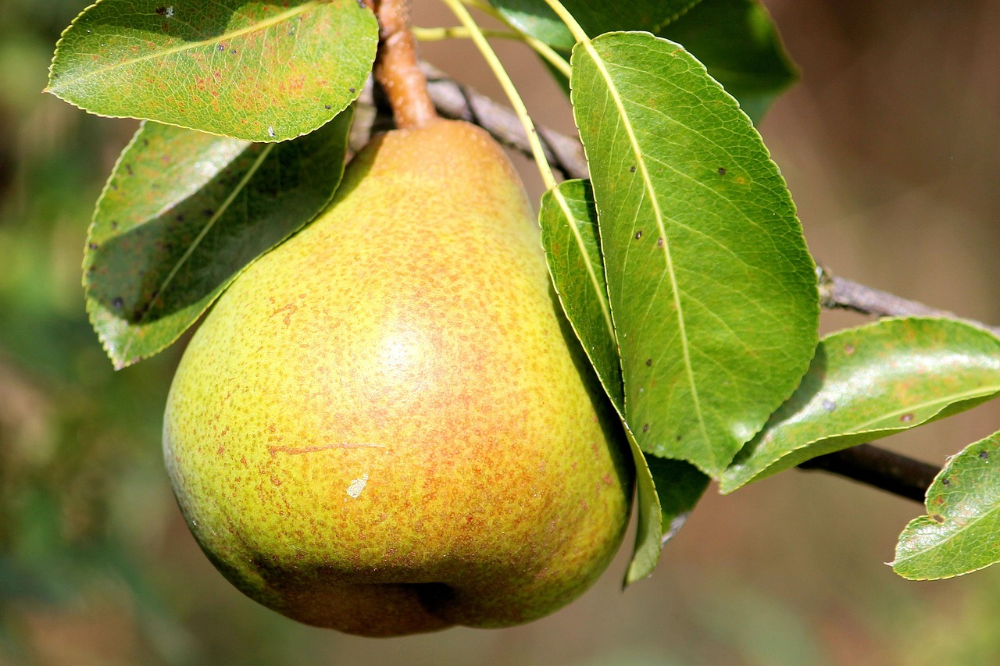
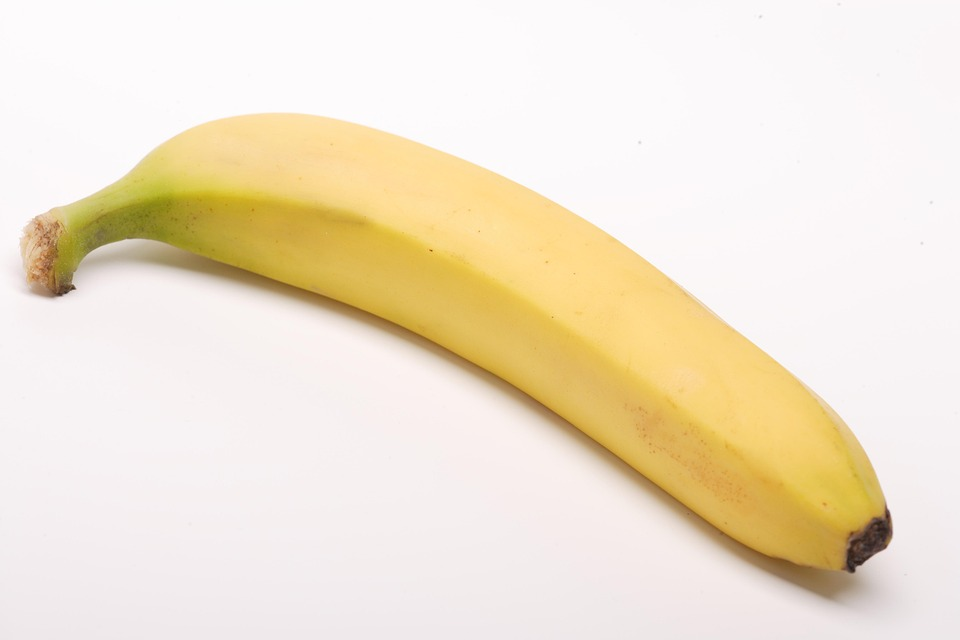
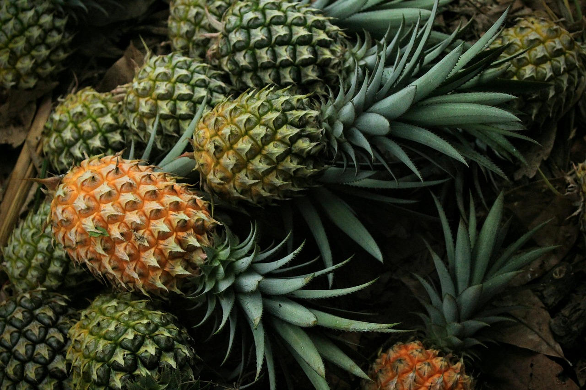
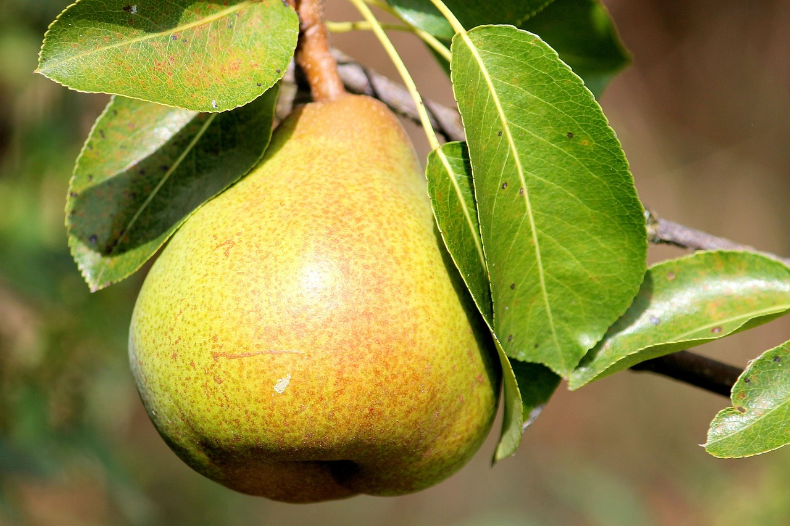
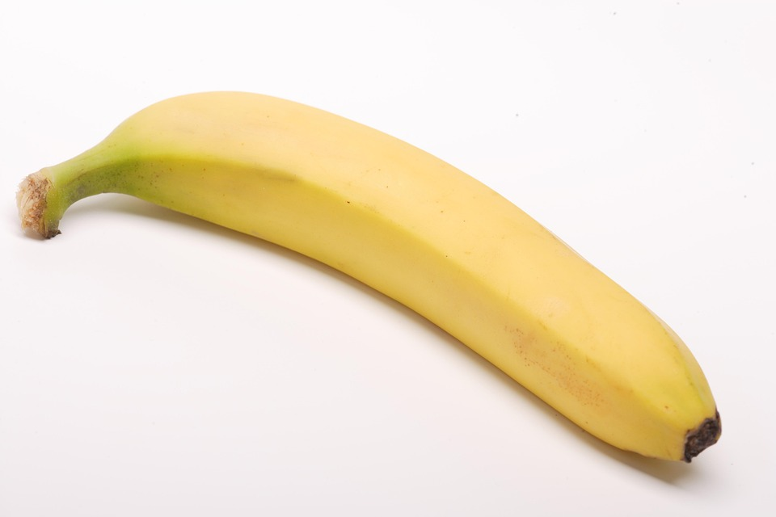
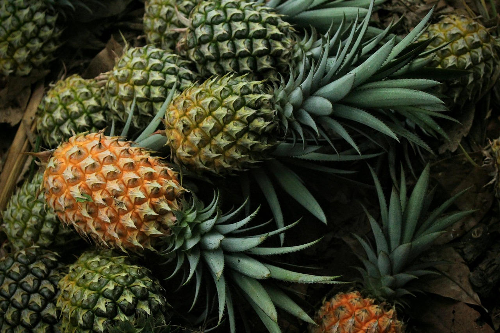

Feira de Produtos Locais
Data: 25 de Maio de 2025
Local: Praça Central da Cidade
Descrição: Venha conhecer e comprar produtos frescos diretamente dos agricultores locais. Uma ótima oportunidade para apoiar a economia rural e saborear delícias do campo!
Festival da Colheita
Data: 15 de Junho de 2025
Local: Comunidade Rural São João
Descrição: Celebre a colheita com música, dança e comidas típicas. Um evento que reúne famílias do campo e da cidade para festejar as tradições rurais.
Noite do Campo na Cidade
Data: 10 de Julho de 2025
Local: Centro Cultural da Cidade
Descrição: Uma noite dedicada à cultura rural com apresentações artísticas, comidas típicas e feiras de artesanato. Traga sua família e venha se divertir!
 







Comentários Recentes